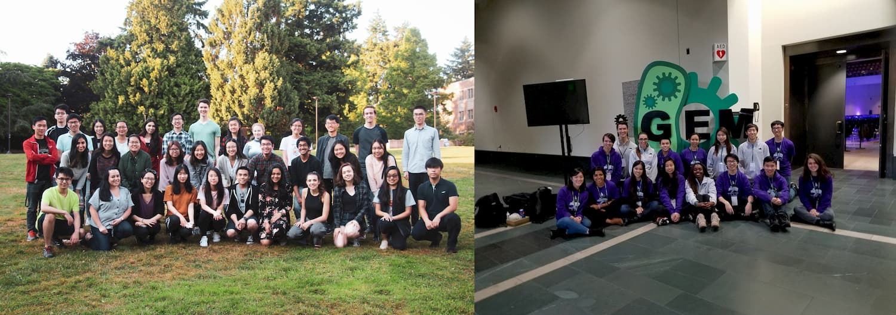

Washington iGEM is an interdisciplinary team of students who run a synthetic biology laboratory and conduct independent research. As the only undergraduate-lab at the University of Washington, Washington iGEM participates in the annual iGEM Competition, the premiere international synthetic biology project competition started at MIT in 2004.
Since 2007, our team has provided undergraduates with unique and exciting opportunities. Offering an alternative to traditional learning in the classroom, our iGEM team offers the opportunity to go through the design-build-execute cycle of a student-run research and engineering project. iGEM offers experiential, realistic research experience combined with focused learning, preparing students for real research positions in the rapidly advancing world of synthetic biology.
This year, our main goal is to develop an in vivo biosensor that relies on chemically induced dimerization (CID). We are incorporating nanobodies in a CID system to create binders for a wide variety of small molecules, even those that do not have binder pairs typically found in nature.